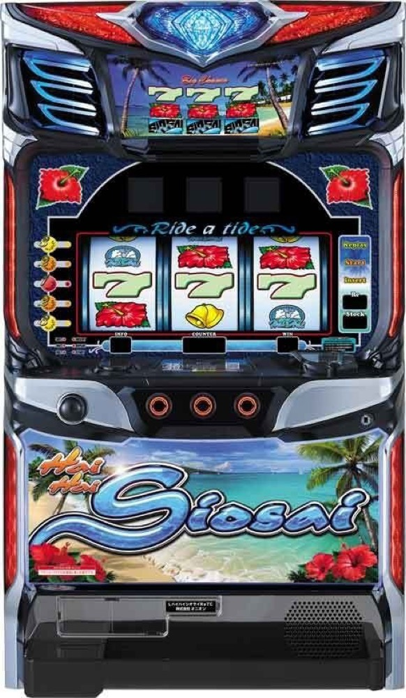

スマート沖スロ ハイハイシオサイRe
ハイビスカス告知から約360枚BIG。32G天国と1G連を狙う。
- 導入
- 2026年11月導入予定
- メーカー
- パイオニア
- 分類
- パチスロ
主要スペック
2026年11月16日導入予定。BIG約360枚・REG約120枚と、32G以内の天国連を組み合わせた完全告知タイプです。
- 設定1合算約1/193.3
- 設定6合算約1/150.3
- BIG約360枚・純増約9枚/G
スマート沖スロ ハイハイシオサイReの見どころと計算条件
2026年11月16日導入予定。BIG約360枚・REG約120枚と、32G以内の天国連を組み合わせた完全告知タイプです。
ハイハイシオサイReを数字で早分かり
ハイビスカス告知からBONUS、ハイシオ天国までの流れと、設定ごとの結果差を固定レートで比較できます。
実機搭載の5段階設定
設定は1・2・4・5・6から均等抽選し、設定3は抽選しません。ボーナス合算は設定1約1/193.3から設定6約1/150.3です。
結果とランキングには抽選設定を表示します。
BIG約360枚と32G天国
BIGは約360枚、REGは約120枚。BIG当選時の約50%で天国へ進み、32G以内の連チャンを狙います。
ハイシオ天国の平均連数は簡易ループへまとめ、全ボーナス比率は完全再現しません。
平均Gと投資目安の計算
掲載するBONUS初当り約1/193.3は設定1基準です。当サイトでは50枚あたり32G、1,000円46枚貸しの固定条件から、設定1基準の平均投資目安を約6,600円と計算します。
シミュレーターでは設定1・2・4・5・6を均等抽選します。設定1・2・4・5・6で公開されている初当り値を個別に使います。公開されていない特化ゾーン・上位到達率の設定差は加えません。 換金は5.2枚交換で固定し、結果とランキングに設定を表示します。
シミュレーション結果の見方
当るまでハイビスカス告知・BONUSまでのゲーム数
設定設定1・2・4・5・6から抽選された今回の設定
上位到達天国32Gとハイシオ天国への到達
最終収支差枚と5.2枚交換の収支目安
結果は自動で「マイ記録」に保存され、同じ機種を何回試したか、最高収支、勝率をあとから確認できます。
簡易シミュレーターについて
ハイビスカス告知・BONUS・ハイシオ天国の流れを固定条件で体験できます。JavaScriptを有効にすると、この位置にシミュレーター、演出、マイ記録、機種別ランキングが表示されます。
結果は娯楽・確率理解のための参考表示です。金銭的価値や交換価値はなく、実際の勝敗や収支を保証しません。18歳未満の方の利用はお控えください。
ハイハイシオサイReのよくある質問
ハイハイシオサイReはどんな台？
2026年11月16日導入予定。 設定1合算約1/193.3が主な確認ポイントです。
ハイハイシオサイReの平均投資目安は？
設定1基準のBONUS初当り約1/193.3と、50枚あたり32G・46枚貸しの固定条件から、平均6,600円を目安として表示します。実際の設定や遊技状況で結果は変わります。
設定とゲームの流れはどう抽選する？
開始時に設定1・2・4・5・6から1つを均等抽選し、ハイビスカス告知、BONUS、天国32G、ハイシオ天国の順で到達を判定します。設定は最終結果とランキングに表示します。
収支はどう計算する？
1,000円46枚貸し・5.2枚交換の固定条件で投資、換金、収支目安を計算します。実店舗の再プレイ、持ちメダル、端数処理は含みません。
2026年11月16日導入予定です。導入後に固定条件で遊べるようになります。